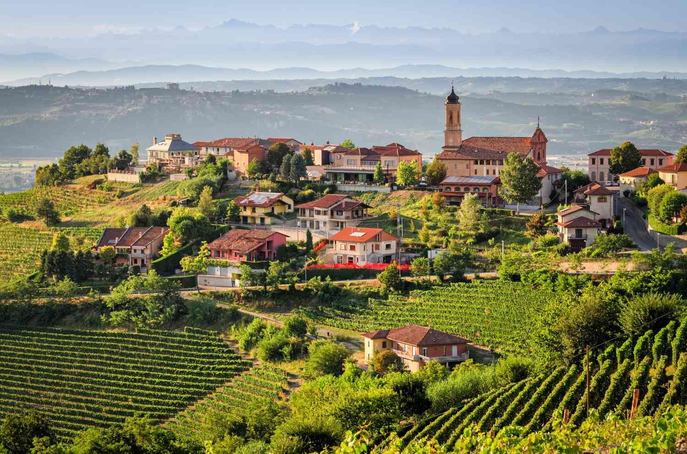

Amsterdam

Italy



We visited two places in Japan with very different vibes: Kyoto and Tokyo. Kyoto is like the Old Japan, with lots of temples, stores, and restaurants that have been there for decades. On the other hand, Tokyo is a bustling, big, modern city. One of the things I appreciated most about it is how clean everything was. There was no trash in the streets, and everything just feels so tidy.
My favorite places in Indonesia are definitely Wakatobi and Raja Ampat. I scuba dive, and the diving there is, in my opinion, some of the best in the world. However, if you're not into diving, don't worry--you will still see plenty while snorkeling. The reefs are vibrant and the fish are thriving. And, if you're lucky, you might be able to find a pgymy seahorse...